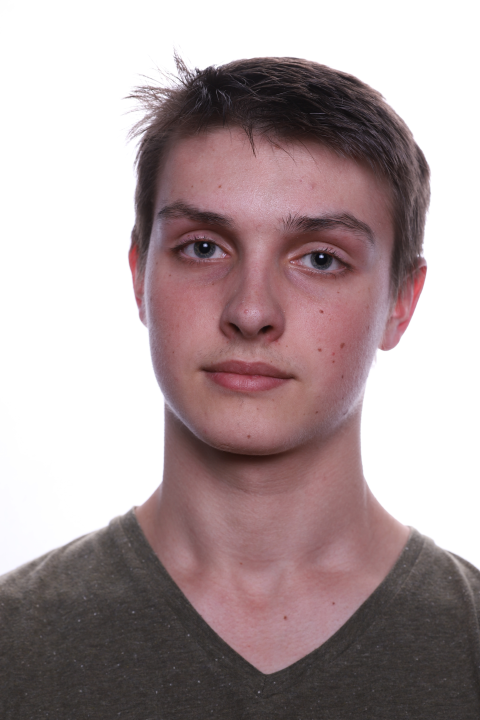
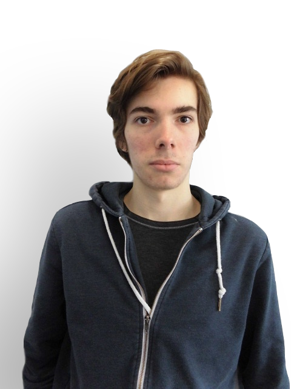

Benjamin Camus
Je suis motivé pour ce projet, car j'aime relier la programmation aux maths/à l'algorithmique, et les statistiques sont un domaine que j'ai peu abordé, et qui attise ma curiosité. Je m'occupe principalement de la partie graphique du projet, ainsi que la mise en place du site web pour présenter celui-ci. J'ai choisi l'interface graphique car je trouve important pour l'utilisateur du programme de pouvoir manipuler le programme visuellement et qu'il y ai une sur-couche rendant le programme plus attractif.

Raphaël Ménez
Je suis Raphaël et je m'occuperai à la fois de l'interface et du site internet. Ce projet est l'occasion pour moi d'apprendre à bien maîtriser GTK qui permet de faire de bon interfaces graphiques. De même je n'ai pas d'expérience en HTML et CSS mais en travaillant sur le site internet je pourrai aussi m'améliorer dans ce domaine.
Baptiste Laporte
Je souhaite réaliser ce projet afin de pouvoir lier nos cours de programmation à un logiciel de mathématiques appliquées. Je m'occuperai donc principalement de la partie concernant la construction des représentations graphiques à partir du jeu de données fournit par l'utilisateur. Cette partie m'intéresse tout particulièrement car une bonne représentation graphique permet de simplifier la compréhension des informations.

Romain Schönholzer
Je suis Romain et je m'occuperais majoritairement de la partie théorique de ce projet, à l'instar de Baptiste je trouve aussi que nos cours de programmations sont trop dissocié de nos cours de maths et que les applications qui mèlent les deux sont rare dans le cadre de notre formation. Je compte sur ce projet pour commencer à fusionner ces deux matières.